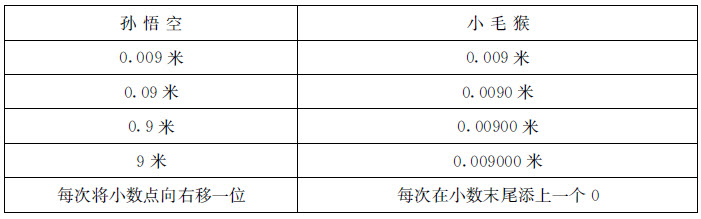
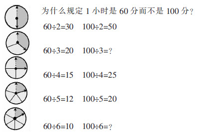

周智雄
有人说：“数学是冰冷的美丽。”这句话曾被我奉为至理名言。当简单粗糙的教学方式遭到质疑时，我便举起这一“挡箭牌”。在日常的教学工作中，我态度认真，要求学生也一丝不苟，教学方式有无创新、学生是否感兴趣等问题，好像都与我无关。一旦有家长问起孩子为何厌学，我便理直气壮地回答：“数学本来就是枯燥而艰深的，要不怎么称为‘冰冷的美丽’呢？这是必修科目，由不得他喜欢还是不喜欢！”
“种瓜得瓜，种豆得豆”，“冰冷”的数学课堂，终于换来学生“冰冷”的回报——在学校的问卷调查中，全班孩子（包括我最器重的几个尖子生）无一例外都把数学列为“最不喜欢的学科”！这无异于当头棒喝，让我如梦初醒。痛定思痛，我琢磨：数学课一贯的“冰冷”面孔如果不改变，就难以唤起学生的学习热情。学生总觉得数学没趣、不好玩儿，我该怎样突破这一“瓶颈”呢？尽管报刊上登载过不少“简约数学”、“深度数学”一类的教学改革成果，但一一考量之后，我感觉都不符合班情。回顾与小学生打交道的往事，我突然有了主意——故事教学法。我深知，任何一个孩子都难以拒绝故事的魅力！尽管他们并不热衷于上数学课，但是，我推荐的《数理化通俗演义》、《数学斗智故事》等书，很多同学都爱不释手。我曾是汉语言文学专业的自考本科生，文笔也不赖，为什么不自己创编一些与课本同步的数学故事呢？
说干就干！此后，我尝试将数学知识融入娓娓动听的故事中，让学生不知不觉地走进抽象的数学王国。编写数学故事需要积累大量素材，我平常就特别留意身边的大小事，广泛阅读报纸，凡是与数学有关的东西都立刻记录下来，以备创作“数学故事”的不时之需。尽管如此，我有时还是很困惑：自己标榜的所谓“故事数学”教学法究竟有没有科学依据？有没有深入研究的价值？一想到这些，我就心里发虚。趁着在华东师范大学培训的机会，我请教了数学教育专家孔企平教授。孔教授认为，“故事数学”算是“情境教学法”的一种具体操作方式，有尝试研究的必要。他还给我推荐了《足球数学》一书，希望对“故事数学”研究有所帮助。
从此，我更是信心百倍！讲故事、学数学，我和学生都乐此不疲。
“加、减法的简便计算”是令三年级学生十分头疼的问题，以前教学375＋999、4425-2998一类的简算，学生总爱忘记“多加了的部分要减去，多减了的部分要补上”的原则。这次，我将枯燥的计算题编入了《“久久久”与“发发发”》的故事中：
“丽丽同学已经积攒了375元零花钱，由于她学习成绩提高得特别快，春节时，奶奶给她准备了一个大红包——压岁钱999元，谐音‘久久久’，老年人总想图个吉利嘛！现在丽丽共有多少钱？”
学生一听便来了兴趣，列出算式后，很快找到了简算的方法：把999看成1000元来加，再减去多加了的1元，即：375＋999=375+1000－1=1374。我接着讲故事：
“丽丽的外公要给她发压岁钱了，他也选了个吉祥数字——888元，谐音‘发发发’呀！那么，丽丽现在共有多少钱呢？”
学生列出算式1374＋888后，有的把888看成1000，再减112就得2262；有的则把888看成900来加，再减去12。孩子们对于计算的过程讲得头头是道，就像给自己算账，一点儿也不含糊。“多加了的部分要减去”的道理原来一点儿也不深奥！
这时，一个学生说：“我在商场看到标价签上也有吉祥数字，如2999元、99.9元。”我顺水推舟，继续讲故事：
“周老师身上有7432元钱，去商场买了一台5999元的电脑，还剩下多少钱？”
学生很快就说出了简算方法：将5999当做6000来减，再补上多减去了的1，得1433（7432-5999=7432-6000+1）元。
一旦用数学的眼光去观察和审视，你就会发现：平平常常的生活中，竟然蕴藏着丰富的数学资源。在数学故事中，我和学生由每天早晨的鞠躬礼研究“角的度数”，由成年女性喜欢穿高跟鞋的现象研究“人体中的比”，由北京奥运会的开幕时间研究“吉祥数字趣题”，由警察抓小偷研究“数学推理”等。
接连收到几位家长的求助：“周老师，我检查儿子的作业，发现他弄不清小数点移动与小数大小变化的关系，该怎么办呢？”我让他们别急，容我细想对策。
第二天的数学课，我同四年级学生聊起了《小毛猴PK孙悟空》的“神话”故事：
“一只小毛猴听说孙悟空凭着‘毫毛变金箍棒’的本事当上了齐天大圣，挺不服气，决心和孙悟空一决高低。见面后，两人各自从身上拔下一根毫毛，都是0.009米。且慢，请同学们先用手比画一下——0.009米大致有多长。（学生用手比画9毫米）只见孙悟空轻轻吹口气，小数点就跑到了下一个0的后边，成了0.09米。请大家再次用手比画一下，他的毫毛现在有多长。（学生动手比画9厘米，并说长度扩大了10倍）此时，小毛猴大叫一声‘变’，0.009的末尾立刻增加了一个0，成了0.0090米。（学生大笑，有同学着急地叫喊：他的毫毛长度没有增加，还是9毫米）接下去，孙悟空又吹了口气，小数点再次向右跑了一位，变成了0.9米；小毛猴再叫一声‘变’，0.0090的末尾再添了一个0，成了0.00900米。（学生又笑：小毛猴好笨啊，他的毫毛长度还是没有变）……”
一边讲故事，我一边在黑板上写出以下数据：

我接着讲：“当孙悟空抡起9米长的金箍棒打过去时，小毛猴那0.009000米的毫毛如何招架得住，只得一命呜呼。想想看：孙悟空为什么能战胜小毛猴？”
学生抢着说：“因为孙悟空掌握了‘小数点每向右移一位，小数就扩大10倍’的特点，而小毛猴却不懂得‘在小数末尾添上或去掉几个0，小数的大小不变’的道理。”
故事讲完了，孩子们对孙悟空和小毛猴斗智斗勇的故事仍津津乐道；而“小数的性质”和“小数点移动与小数大小变化的规律”这两个难点知识也不知不觉地植入心中。当天，我并没有强求学生背诵课本上的这两个性质。可是，他们的作业效果却出奇地好！
期末复习，常常要做大量练习，因为没有什么新知识可学，所以师生常称之为“炒冷饭”。后来，我编写了《题有“三十六变”，我有一双慧眼》的故事，将学生以前易错的习题收集起来，再“摇身一变”——要么增加一个无关紧要的“干扰”信息，要么将问题换一个叙述方式，检验学生是否还能把握问题核心正确解答。同样是做旧题，可练习的形式不一样——学生都成了神话世界里的英雄，“慧眼识妖，降妖除魔”，新鲜而又刺激！
“数的整除”单元有很多概念——因数、倍数、公倍数、公因数、质数、合数等，学生不易辨别。为此，教学“最小公倍数”一课时，我借用了报纸上的一个故事，做了一点点儿“数学化”加工：
“在风景如画的长江之上，许许多多的游船正忙碌地穿梭往返。帅哥小李是一艘游船上的水手，靓妹小刘则是另一艘游船上的技术员。小李所在的游船往来于武汉与上海之间，每15天返回武汉停泊一次；小刘所在的游船则往返于武汉与长江上游的重庆之间，每12天返回武汉一次。两艘船同时停靠武汉那一天，两人相识并相爱了。很快，他们又相互告别，同时开始了新的航程……”
孩子们听完故事，根本不用我发号施令，已拿起笔飞快地计算着两位恋人下次相遇的时间。当得出下一次相聚还需要等60天的结论时，孩子们都感叹不已。这时，我开始了新课讲述：“这里的60，实际上是15和12的最小公倍数。想想看，当两人再次相聚时，男青年已经是第几次返回武汉？女青年又是第几次返回武汉？他们一年能有几次在武汉相聚？分别是在什么时候？……”这堂课涉及了倍数、公倍数、最小公倍数等复杂的概念，孩子们都掌握得很好。
随着“故事数学”教学法的推行，我班学生已不再满足于听故事，而是争着帮我写故事“续集”，到后来，学生干脆自己编起数学故事来。为了写好故事，他们不得不提前预习课本内容，自学能力也有所提高。眼见孩子们对数学故事如此着迷，我立即在教育在线、新浪网建立了班级博客，为他们提供一个交流的平台。学生撰写的《我和表姐玩“大富翁”》、《我给全班算笔账》等文章，还先后发表在《少年先锋报》、《作文大本营》等刊物上。我也以“巴山蜀水一小舟”的网名在教育在线注册了自己的博客，与同行分享“故事数学”研究成果。很多报纸杂志也纷纷刊登我写的数学故事：《任意四边形的故事》刊登在《中国教师报》上，《赏校园美景，找数学规律》发表于《今日教育》，《让思维转个弯儿》刊登于《数学小灵通》，《帅哥与怪物》发表于《教育故事》，《超级退位》发表于《广东教育》等。
当然，最让我欣慰的是，孩子们对数学的态度终于由“冰冷”转为“火热”。我自己说了不算，有事实为证——最近两学期，学校照例在学生中进行了问卷调查，结果，“不喜欢”数学的人已寥寥无几。
数学故事，功不可没！
课堂智慧
《“100”不敌“60”》的故事
——香港新亚洲版四年级上册“因数”教学实录
2010年8月，我作为“教育部第六届内地与香港教师交流与协作计划”成员，到香港交流工作一年。初到香港，我便制定了以“故事数学”开启交流之门的规划——努力施展自己的故事“绝活儿”，赢得了学生的喜爱；同时，以“故事”会友，争取香港老师加盟“故事数学”研究。2011年11月11日，我在香港东华三院李东海小学四A班上了一堂公开课，内容是“因数”（香港课本与内地不一样——倍数与因数分开编排，学生上一课已经学习了倍数）。课堂上，我以《“100”不敌“60”》的故事开头，制造了“为什么60胜过100”的悬念，孩子们的探究欲望被激发出来；直至新课结束时，我再与学生一道运用因数的知识揭开“100为何不敌60”之谜——一个数越大，它的因数的个数不一定越多。
故事前后照应，情节曲折，对孩子有一定的吸引力，更重要的是能潜移默化地培养学生学以致用的习惯。以下是该课的教学过程。
师：（在黑板上写下两个数——“100”和“60”）看到这两个数，你联想到了什么？你比较喜欢哪个数？
生：联想到了考试成绩。当然喜欢100分啦！谁愿意得60分！（前一周，学校刚举行了“段考”——类似于半期考试，学生联想到考试成绩是很自然的事）
师：是啊，当这两个数表示考试成绩的时候，我想大多数人都会喜欢100。其实，作为自然数王国里的两个普通成员，这两个数的地位是平等的，100并不处处都比60受欢迎呢！
（学生一脸诧异，像是在说：“100不如60？到底怎么回事？快说出来听听。”）
师：就拿我们常见的钟表来说吧！古时候，人类刚刚发明钟表的时候，为了一个问题而争论不休——1小时（分针在钟面上转一圈）规定为多少分比较合适呢？有人说60分，也有人说100分。争论的结果怎样呢？当然，现在我们都知道最后是60胜出，1小时等于60分嘛！可是，你知道人们为什么选择了60吗？
（孩子们被吊足了“胃口”，眼巴巴地望着老师，期待着答案）
师：别急，因为现在我即使说了，你们也不一定听得懂。接下来，我们一起学习“因数”一课，到时候你自然就会明白其中的奥秘了。
（教师出示学校小童军训练图片）
师：看啊，12名小童军正在操场上训练呢！他们按照教练的指挥，不断变换着队形（课件展示童军队排成1行、2行、3行等）。但是，不管哪种队形，每行人数都是相等的，整整齐齐。
师：教练遇到了一个难题：在每行人数相等的情况下，12名童军可以排出多少种不同的队形呢？你能帮他想想吗？
师：每种队形中，每一行有几人，排几行？请你用“○”代表童军，在纸上画一画。再根据你排出的队形写一个乘法算式。
（一名学生上台展示自己设计的队形，其他同学补充，要求与前边的作品不雷同）
队形1：每行6人，站成2行，6×2＝12（人）。（注：香港习惯上把竖排称为“行”，横排称为“列”，与内地课本正好相反）
○○
○○
○○
○○
○○
○○
队形2：每行4人，共3行，4×3＝12（人）。
○○○
○○○
○○○
○○○
队形3：每行2人，共6行，2×6＝12（人）。
○○○○○○
○○○○○○
队形4：每行3人，共4行，3×4＝12（人）。
○○○○
○○○○
○○○○
师：经过大家的努力，我们找出了四种队形。如果我们换个角度观察——从队伍右边看第一种队形，就成了每行2人，共有6行，同第三种队形一样了。同样的道理，如果我们从队伍左边观察第四种队形，就和第几种队形相同了？
生：第二种。
师：因此，以上四种队形可以合并为两种。
（教师整理板书）6×2＝12
4×3＝12师：除了这两种站法之外，还有别的吗？
生：我不知道每行站1个人算不算？
○○○○○○○○○○○○
师：我们一起来看一看，这种站法是否达到每行人数相等的要求？
生：是。
师：既然达到了要求，这种队形自然应该算啦！用乘法算式怎样表示？
生：1×12＝12。
师：换个角度看，这种站法还可以说成是每行几人、共几行？
生：每行12人，共1行。
师：（指示学生观察黑板上整理后的3种队形和3个乘法算式）可以每行站5人吗？每行站8人呢？
生：不行，这样每行人数就不一样多了。
师：上一堂课我们已经知道：根据算式6×2＝12，就说12是6的倍数，12也是2的倍数。现在，我们把两个数之间的关系换个说法——6是12的因数，2也是12的因数。那么，根据4×3＝12，谁是谁的因数？（学生个别说、同桌互说、小组齐说）
师：如果把倍数比作爸爸，因数就相当于儿子，爸爸和儿子是相互依存的关系，我们不能说“小王是儿子”——因为他可能是小小王的爸爸，而一定要说明小王是谁的儿子。同样，我们不能说“6是因数”，一定要说6是谁的因数……
师：12×1＝12，那么谁是谁的因数？
师：12是12的因数，这句话说起来有点儿拗口，不过数学上真是这么回事儿！12也是12的倍数呢！打个比方就是：儿子不但要尊重爸爸，也要自重！长辈不但要关心孩子，也要爱护自己！所以，一个自然数既是自己的因数，又是自己的倍数。
师：请你用8个正方形摆成一个长方形，有几种不同摆法？请大家在方格纸上涂色，表示出你摆的长方形。（巡视指导）
师：很不错哟！还会用算式表示自己的摆法。你能根据算式说说谁是谁的因数吗？
（学生汇报；教师合并、整理出以下板书）1×8＝8
2×4＝8
8的因数有：1、2、4、8。师：请你像刚才那样用摆图形的方法，找出20的所有因数。
（学生在方格纸上涂色，教师巡视指导）
师：下面每组数中，谁是谁的因数？
2、3、5、8、10、203、5、18、20、36
（学生回答，相互补充）
师：谁能把其中的36的因数一口气说完？除了这些，36还有其他因数吗？
师：看来，要找36的一个因数并不难，难就难在找出36的所有因数！你能不摆图形（画图），用别的方法找出36的所有因数吗？注意，一个都不能遗漏哟！你也可以与同桌合作进行。
［教师选取几份有代表性的作品进行展示：未找全的或有多余（错误）答案的；找全了，但排列顺序混乱的；有序、完整的。］
师：你认为第一个同学没找全的原因是什么？
生：找因数时不要一个一个地找，要一对一对地找。
师：第二位同学通过列乘法算式的方法来找因数，其他同学有用这种方法的吗？对于第二位同学的方法，你有什么建议没有？
师：用第三位同学的方法找因数有什么优势？
生：从最小的1开始试乘，从小到大排列，一目了然，不容易漏，也不容易重复。
（教师整理板书）
1×36＝36
2×18＝36
3×12＝36
4×9＝9
6×6＝6
师：继续往后还有9×4，12×3…为什么不写出来呢？
生：与前面的4×9，3×12出现了重复，所以不写了。
师：现在你能不重、不漏地找出一个数的所有因数了吗？试试找出20和15的所有因数。
（集体评点）
师：你发现没有，上面这些数都有因数几？
生：1。1是所有自然数的因数。
师：猜猜看：在1-100的所有自然数中，哪个数的因数最多？
生：我认为100的因数最多。
生：我认为99的因数最多。
……
师：我们来检验一下，看看到底谁的猜测是正确的。请第一组同学找出100的所有因数，第二组同学找出99的所有因数，第三组同学找出60的所有因数……
（各组派代表展示结果，最后，大家惊讶地发现：这几个数当中，60的因数最多）
师：看来，一个数越大，它的因数不一定越多。60就是一个比较特别的数，在1-100之间，它的因数最多。（另外，还有90和72的因数个数与它一样多）现在你能解开“100”不敌“60”的奥秘了吗？（课件播放）

（学生各抒己见）
师：（总结）正如大家所说，60有多个因数（可以被较多的数整除），从而可以拆分成多种不同的时间长度，1小时可以看作2个30分钟、3个20分钟、4个15分钟、5个12分钟、6个10分钟等。而100拆成3等份或者6等份则不能得到整数的结果。这也是人们在很多场合不使用“十进制”、“百进制”，而使用“60进制”的原因！
师：通过《“100”不敌“60”》这个故事，我们还应该明白这样一个道理：60同100相比，虽然是个“小人物”，但60完全不必因此而“自卑”——60也有自己的优势（拥有的因数较多）。人与人之间的关系又何尝不是如此呢！只有扬长避短，才能取得成功。